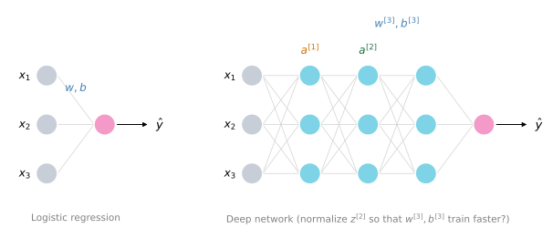
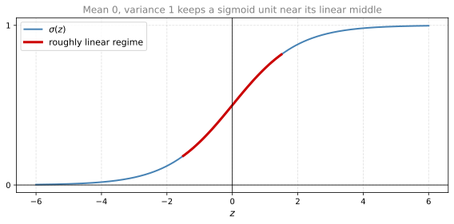
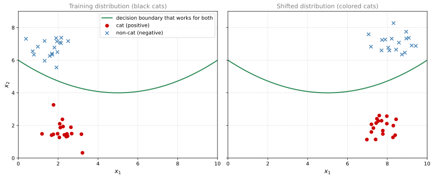
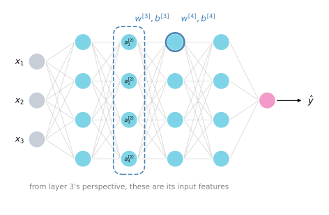
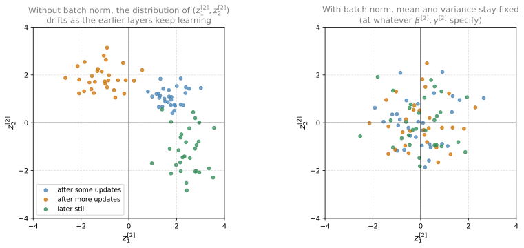

Batch Normalization
deep-learning
batch-normalization
covariate-shift
regularization
How batch norm normalizes hidden unit values with learnable mean and variance, fits into training, why it works, and what changes at test time.
The previous page closed by promising a technique that makes a neural network much more robust to the choice of hyperparameters. In the rise of deep learning, one of the most important ideas has been an algorithm called batch normalization, created by two researchers, Sergey Ioffe and Christian Szegedy. Batch normalization makes your hyperparameter search problem much easier, makes a much bigger range of hyperparameters work well, and also enables you to much more easily train even very deep networks.
Normalizing Activations in a Network
When training a model such as logistic regression, you may remember that normalizing the input features can speed up learning. You compute the mean and subtract it off from your training set, compute the variance with an element-wise squaring, and then normalize your dataset by dividing by the standard deviation,
\[ \mu = \frac{1}{m} \sum_{i=1}^{m} x^{(i)}, \qquad x := x - \mu, \qquad \sigma^2 = \frac{1}{m} \sum_{i=1}^{m} x^{(i)2}, \qquad x := \frac{x}{\sigma} \]
We saw earlier how this can turn the contours of your learning problem from something very elongated into something more round, and easier for an algorithm like gradient descent to optimize. So this works for normalizing the input feature values to a neural network or to logistic regression.
Now, how about a deeper model? You have not just input features \(x\); layer 1 has activations \(a^{[1]}\), layer 2 has activations \(a^{[2]}\), and so on. If you want to train the parameters \(w^{[3]}, b^{[3]}\), would it not be nice if you could normalize the mean and variance of \(a^{[2]}\) to make the training of \(w^{[3]}, b^{[3]}\) more efficient? In logistic regression we saw how normalizing \(x_1, x_2, x_3\) helps you train \(w\) and \(b\) more efficiently. Here the question is, for any hidden layer, can we normalize the values of \(a\), say \(a^{[2]}\) in this example but really any hidden layer, so as to train \(w^{[3]}, b^{[3]}\) faster? Since \(a^{[2]}\) is the input to the next layer, it affects the training of \(w^{[3]}\) and \(b^{[3]}\). This is what batch normalization, or batch norm for short, does.
Technically, we will actually normalize the values of \(z^{[2]}\), not \(a^{[2]}\). There is some debate in the deep learning literature about whether you should normalize the value before the activation function, \(z^{[2]}\), or after applying the activation function, \(a^{[2]}\). In practice, normalizing \(z^{[2]}\) is done much more often, so that is the version presented here and the recommended default choice.
Batch Norm for a Single Layer
Here is how you implement batch norm. Given some intermediate values in your neural net, say hidden unit values \(z^{(1)}\) up to \(z^{(m)}\) from some hidden layer \(l\) (to reduce writing, the \(^{[l]}\) is omitted in these equations, but everything here is specific to one layer), you compute the mean and variance, and then normalize each \(z^{(i)}\) by subtracting the mean and dividing by the standard deviation,
\[ \mu = \frac{1}{m} \sum_{i} z^{(i)}, \qquad \sigma^2 = \frac{1}{m} \sum_{i} \left(z^{(i)} - \mu\right)^2 \]
\[ z^{(i)}_{\text{norm}} = \frac{z^{(i)} - \mu}{\sqrt{\sigma^2 + \varepsilon}} \]
For numerical stability, \(\varepsilon\) is added to the denominator, just in case \(\sigma^2\) turns out to be zero in some estimate. So now these values \(z\) have been normalized to mean 0 and standard unit variance, every component of \(z\) has mean 0 and variance 1.
But we do not want the hidden units to always have mean 0 and variance 1. Maybe it makes sense for hidden units to have a different distribution. So what we do instead is compute
\[ \tilde{z}^{(i)} = \gamma\, z^{(i)}_{\text{norm}} + \beta \]
Here \(\gamma\) and \(\beta\) are learnable parameters of your model. Using gradient descent, or some other algorithm like gradient descent with momentum, RMSprop, or Adam, you update the parameters \(\gamma\) and \(\beta\) just as you would update the weights of your neural network.
Notice that the effect of \(\gamma\) and \(\beta\) is that they allow you to set the mean of \(\tilde{z}\) to be whatever you want it to be. In fact, if
\[ \gamma = \sqrt{\sigma^2 + \varepsilon}, \qquad \beta = \mu \]
so if \(\gamma\) were equal to the denominator term and \(\beta\) were equal to the mean, then \(\gamma z^{(i)}_{\text{norm}} + \beta\) would exactly invert the normalization, and \(\tilde{z}^{(i)} = z^{(i)}\). With that particular setting of \(\gamma\) and \(\beta\), these four equations are just computing the identity function. By choosing other values of \(\gamma\) and \(\beta\), you can make the hidden unit values have other means and variances as well.
The way this fits into your neural network is that, whereas previously you were using the values \(z^{(1)}, z^{(2)}, \ldots\), you now use \(\tilde{z}^{(i)}\) instead of \(z^{(i)}\) for the later computations in the network. And if you want to denote explicitly which layer this belongs to, you put the \(^{[l]}\) back in.
Why Learnable Mean and Variance
The intuition to take away is that we saw how normalizing the input features \(x\) can help learning in a neural network, and what batch norm does is apply that normalization process not just to the input layer but to values deep in some hidden layer. One difference from the training input, though, is that you might not want your hidden unit values to be forced to have mean 0 and variance 1. For example, if you have a sigmoid activation function, you do not want your values to always be clustered near 0. You might want them to have a larger variance, or a mean different from 0, in order to better take advantage of the nonlinearity of the sigmoid function, rather than have all your values sit in the roughly linear regime around the middle.

So what batch norm really does is normalize the mean and variance of the hidden unit values, really the \(z\) values, to have some fixed mean and variance. That mean and variance could be 0 and 1, or it could be some other value, and it is controlled by the two explicit parameters \(\gamma\) and \(\beta\), which the learning algorithm can set to whatever it wants. That is the mechanics of implementing batch norm for a single layer of the network; the next section fits it into a deep network with many layers.
Review Questions
1. Write the four batch norm equations for one layer. What roles do \(\varepsilon\), \(\gamma\), and \(\beta\) play?
TipAnswer
\[ \mu = \frac{1}{m} \sum_i z^{(i)}, \qquad \sigma^2 = \frac{1}{m} \sum_i (z^{(i)} - \mu)^2 \] \[ z^{(i)}_{\text{norm}} = \frac{z^{(i)} - \mu}{\sqrt{\sigma^2 + \varepsilon}}, \qquad \tilde{z}^{(i)} = \gamma z^{(i)}_{\text{norm}} + \beta \] \(\varepsilon\) is a small constant added for numerical stability in case \(\sigma^2\) is close to zero. \(\gamma\) and \(\beta\) are learnable parameters, updated by gradient descent (or momentum, RMSprop, Adam) like any other parameter, that set the standard deviation and mean of \(\tilde{z}\) so the hidden units are not forced to keep mean 0 and variance 1.
1. For what setting of \(\gamma\) and \(\beta\) does batch norm compute the identity function, and why would a network ever want hidden units with a mean different from 0?
TipAnswer
If \(\gamma = \sqrt{\sigma^2 + \varepsilon}\) and \(\beta = \mu\), the rescaling exactly inverts the normalization, so \(\tilde{z}^{(i)} = z^{(i)}\). A different mean or variance can be preferable because forcing values to cluster around 0 with unit variance can keep, for example, a sigmoid unit in its roughly linear middle regime; a larger variance or shifted mean lets the unit take better advantage of the nonlinearity.
1. Does batch norm normalize \(z^{[l]}\) or \(a^{[l]}\)?
TipAnswer
There is some debate in the literature about normalizing before the activation function (\(z^{[l]}\)) or after it (\(a^{[l]}\)), but in practice normalizing \(z^{[l]}\) is done much more often and is the recommended default.
1. Which of the following statements about the batch norm parameters \(\gamma^{[l]}\) and \(\beta^{[l]}\) are true? Check all that apply.
There is one global value of \(\gamma \in \mathbb{R}\) and one global value of \(\beta \in \mathbb{R}\) for each layer, and these apply to all the hidden units in that layer.
They are hyperparameters of the algorithm, tuned by random sampling on a logarithmic scale.
Batch normalization introduces them as two new parameters that must be learned during training.
They set the variance and mean of the linear variable \(\tilde{z}^{[l]}\) of a given layer.
They can be learned using Adam, gradient descent with momentum, or RMSprop, not only with plain gradient descent.
The optimal values are \(\gamma = \sqrt{\sigma^2 + \varepsilon}\) and \(\beta = \mu\).
TipAnswer
c, d, and e. The transformation \(\tilde{z}^{(i)} = \gamma z^{(i)}_{\text{norm}} + \beta\) makes \(\gamma\) and \(\beta\) exactly the knobs that set the variance and mean of \(\tilde{z}^{[l]}\), and they are ordinary learnable parameters, updated by whatever optimizer trains the weights. Option a is false because their dimension is \((n^{[l]}, 1)\), one scale and one shift per hidden unit, not one shared value per layer. Option b is false because they are learned, not tuned as hyperparameters. Option f is false because that particular setting exactly inverts the normalization, turning the whole batch norm step into the identity function, which defeats its purpose; the right values are whatever the learning algorithm discovers.
Fitting Batch Norm into a Neural Network
You have seen the equations for one hidden layer. In a deep network, batch norm is applied between computing \(z\) and applying the activation function, in every layer where you use it. In each layer \(l\), you first compute \(z^{[l]}\) from the previous layer’s activations as usual, then the batch norm step, governed by the parameters \(\beta^{[l]}\) and \(\gamma^{[l]}\) of that layer, turns \(z^{[l]}\) into the normalized and rescaled \(\tilde{z}^{[l]}\), and only then do you apply the activation function,
\[ x \xrightarrow{\;w^{[1]}\;} z^{[1]} \xrightarrow[\;\beta^{[1]},\, \gamma^{[1]}\;]{\text{BN}} \tilde{z}^{[1]} \longrightarrow a^{[1]} = g^{[1]}(\tilde{z}^{[1]}) \xrightarrow{\;w^{[2]}\;} z^{[2]} \xrightarrow[\;\beta^{[2]},\, \gamma^{[2]}\;]{\text{BN}} \tilde{z}^{[2]} \longrightarrow a^{[2]} \longrightarrow \cdots \]
So the parameters of the network are the usual \(w^{[1]}, b^{[1]}, \ldots, w^{[L]}, b^{[L]}\), and added to them the new parameters \(\beta^{[1]}, \gamma^{[1]}, \beta^{[2]}, \gamma^{[2]}\), and so on, for each layer in which you apply batch norm.
WarningThis \(\beta\) Is Not the Momentum \(\beta\)
These \(\beta\) parameters have nothing to do with the hyperparameter \(\beta\) used for momentum and the exponentially weighted averages. The authors of the Adam paper used \(\beta\) to denote their hyperparameters, and the authors of the batch norm paper used \(\beta\) to denote this parameter; both notations are kept here in case you read the original papers. The \(\beta^{[l]}\) that batch norm learns is a completely different \(\beta\) from the hyperparameter in momentum, RMSprop, and Adam.
Since \(\beta^{[l]}\) and \(\gamma^{[l]}\) are now parameters of your algorithm, you update them with whatever optimization algorithm you are using. With gradient descent you would compute \(d\beta^{[l]}\) for a given layer and update \(\beta^{[l]} := \beta^{[l]} - \alpha\, d\beta^{[l]}\), and you can equally use Adam, RMSprop, or momentum to update \(\beta^{[l]}\) and \(\gamma^{[l]}\), not just plain gradient descent.
If you are using a deep learning programming framework, you usually will not have to implement the batch norm layer yourself. In TensorFlow, for example, it can be one line of code, tf.nn.batch_normalization. Frameworks are discussed in a later section, but in practice you may not need to implement all these details yourself; knowing how it works simply gives you a better understanding of what your code is doing.
Batch Norm with Mini-Batches
So far we have talked about batch norm as if you were training on the entire training set at a time, as if using batch gradient descent. In practice, batch norm is usually applied with mini-batches of your training set. You take your first mini-batch \(X^{\{1\}}\) and compute \(z^{[1]}\) as before, using \(w^{[1]}\). Then, using just this mini-batch, you compute the mean and variance of the \(z^{[1]}\) values, subtract the mean, divide by the standard deviation, and rescale by \(\beta^{[1]}, \gamma^{[1]}\) to get \(\tilde{z}^{[1]}\); all of this is on the first mini-batch. Then you apply the activation function to get \(a^{[1]}\), compute \(z^{[2]}\) using \(w^{[2]}\), and so on, to perform one step of gradient descent on the first mini-batch. Then you move to the second mini-batch \(X^{\{2\}}\) and do the same thing, normalizing using just the data in the second mini-batch, then the third mini-batch, and you keep training.
The Bias Parameter Drops Out
There is one detail of the parameterization to clean up. We said the parameters are \(w^{[l]}, b^{[l]}\) plus \(\beta^{[l]}, \gamma^{[l]}\), with
\[ z^{[l]} = w^{[l]} a^{[l-1]} + b^{[l]} \]
But batch norm looks at the mini-batch and normalizes \(z^{[l]}\) to mean 0 first. That means whatever the value of \(b^{[l]}\) is, it just gets subtracted out, because adding any constant to all the examples in the mini-batch changes nothing; any constant you add is canceled by the mean subtraction step. So if you are using batch norm, you can eliminate the parameter \(b^{[l]}\), or if you prefer, think of it as permanently set to 0. The parameterization becomes
\[ z^{[l]} = w^{[l]} a^{[l-1]}, \qquad z^{[l]}_{\text{norm}}, \qquad \tilde{z}^{[l]} = \gamma^{[l]} z^{[l]}_{\text{norm}} + \beta^{[l]} \]
and \(\beta^{[l]}\) is what ends up deciding the mean of \(\tilde{z}^{[l]}\), taking over the role of the shift or bias term.
Finally, the dimensions. On one example, \(z^{[l]}\) has dimension \((n^{[l]}, 1)\), where \(n^{[l]}\) is the number of hidden units in layer \(l\), and so \(b^{[l]}\) had dimension \((n^{[l]}, 1)\). The dimensions of \(\beta^{[l]}\) and \(\gamma^{[l]}\) are also \((n^{[l]}, 1)\), because they scale the mean and variance of each of the \(n^{[l]}\) hidden units to whatever the network wants to set them to.
Gradient Descent with Batch Norm
Pulling it all together, here is how you implement gradient descent using batch norm, assuming mini-batch gradient descent.
For \(t = 1, \ldots,\) number of mini-batches:
- Implement forward propagation on mini-batch \(X^{\{t\}}\), and in each hidden layer use batch norm to replace \(z^{[l]}\) with \(\tilde{z}^{[l]}\), so that within the mini-batch the \(z\) values have a normalized mean and variance.
- Use backpropagation to compute \(dW^{[l]}\), \(d\beta^{[l]}\), \(d\gamma^{[l]}\) for each layer (technically \(db^{[l]}\) goes away, since \(b^{[l]}\) has been eliminated).
- Update the parameters, \(W^{[l]} := W^{[l]} - \alpha\, dW^{[l]}\), \(\beta^{[l]} := \beta^{[l]} - \alpha\, d\beta^{[l]}\), and similarly for \(\gamma^{[l]}\).
This is written for plain gradient descent, but it works equally with gradient descent with momentum, RMSprop, or Adam, where instead of this update you use the updates given by those algorithms to the parameters \(W^{[l]}\), \(\beta^{[l]}\), and \(\gamma^{[l]}\).
Review Questions
1. With batch norm, why can the bias parameter \(b^{[l]}\) be eliminated, and what takes over its role?
TipAnswer
Batch norm computes the mean of the \(z^{[l]}\) values over the mini-batch and subtracts it, so any constant added to every example, which is exactly what \(b^{[l]}\) does, is canceled by the mean subtraction. You can remove \(b^{[l]}\) (or think of it as permanently 0), leaving \(z^{[l]} = w^{[l]} a^{[l-1]}\). The batch norm shift parameter \(\beta^{[l]}\) takes over the role of the bias, deciding the mean of \(\tilde{z}^{[l]}\).
1. What are the dimensions of \(\beta^{[l]}\) and \(\gamma^{[l]}\), and how are they updated during training?
TipAnswer
Both are \((n^{[l]}, 1)\), one scale and one shift per hidden unit of layer \(l\), the same dimension the bias \(b^{[l]}\) had. They are ordinary learnable parameters. Backpropagation computes \(d\beta^{[l]}\) and \(d\gamma^{[l]}\), and they are updated with the same optimizer as the weights, plain gradient descent, momentum, RMSprop, or Adam. They are not related to the momentum or Adam hyperparameter \(\beta\).
1. When training with mini-batches, on what data are the batch norm mean \(\mu\) and variance \(\sigma^2\) computed?
TipAnswer
On the current mini-batch only. For each mini-batch \(X^{\{t\}}\), each batch-normalized layer computes the mean and variance of its \(z^{[l]}\) values over just the examples in that mini-batch, normalizes with them, and rescales with \(\beta^{[l]}, \gamma^{[l]}\) before the activation function.
1. When using batch normalization, it is OK to drop the parameter \(b^{[l]}\) from forward propagation, because it is effectively canceled out during the normalization step, where we compute \(z^{[l]}_{\text{norm}} = \frac{z^{[l]} - \mu}{\sqrt{\sigma^2 + \varepsilon}}\). True or False?
True
False
TipAnswer
a. True. The bias adds the same constant to every example in the mini-batch, and the mean subtraction removes any such constant, so \(b^{[l]}\) has no effect and can be eliminated, or thought of as permanently set to 0. Its role of setting the mean is taken over by \(\beta^{[l]}\).
1. When using batch normalization, it is OK to drop the parameter \(W^{[l]}\) from forward propagation, since it will be subtracted out when we compute \(\tilde{z}^{[l]} = \gamma^{[l]} z^{[l]}_{\text{norm}} + \beta^{[l]}\). True or False?
True
False
TipAnswer
b. False. The weight matrix does not get subtracted out during the batch normalization process, although it gets re-scaled. \(W^{[l]}\) still determines the value \(z^{[l]} = W^{[l]} a^{[l-1]}\) that the normalization acts on, and it remains a trained parameter of the layer. Only the bias \(b^{[l]}\) drops out, because only a constant added to every example is canceled by the mean subtraction.
Why Batch Norm Works
Here is one reason. You have seen how normalizing the input features \(x\) to mean 0 and variance 1 can speed up learning; rather than having some features ranging from 0 to 1 and some from 1 to 1,000, normalizing all input features to a similar range of values speeds up learning. One intuition behind batch norm is that it is doing a similar thing, but for the values in your hidden units and not just for the inputs. This is only a partial picture, though; a couple of further intuitions give a deeper understanding of what batch norm is doing.
Robustness to Covariate Shift
A second reason batch norm works is that it makes the weights later or deeper in your network, say the weights in layer 10, more robust to changes in the weights of earlier layers, say layer 1.
Here is a vivid example. Suppose you have trained a network on the famous cat detection task, but your training set contains only images of black cats. If you now try to apply this network to data with colored cats as the positive examples, your classifier might not do very well. In pictures, if your training set has positive and negative examples in one arrangement, but the dataset you generalize to has positives and negatives located elsewhere, you would not expect a model trained on the left data to do well on the right data. There might be one decision boundary that works well for both, but the learning algorithm cannot be expected to discover it just by looking at the data on the left.

This idea of the data distribution changing goes by the somewhat fancy name covariate shift. The idea is that if you have learned some \(x \to y\) mapping and the distribution of \(x\) changes, you might need to retrain your learning algorithm. This is true even if the ground truth function mapping \(x\) to \(y\) remains unchanged, as it does in this example, because the ground truth function is simply whether the picture is a cat or not. The need to retrain becomes even more acute if the ground truth function shifts as well.
How does covariate shift apply to a neural network? Consider a deep network and look at the learning process from the perspective of, say, the third hidden layer. This layer has learned some parameters \(w^{[3]}, b^{[3]}\). It gets some set of values from the earlier layers, call them \(a^{[2]}_1, a^{[2]}_2, a^{[2]}_3, a^{[2]}_4\), and has to do some stuff with them to hopefully make the output \(\hat{y}\) close to the ground truth \(y\). If you cover up everything to the left, these values might as well be features \(x_1, x_2, x_3, x_4\), and the job of the third hidden layer is to take them and find a way to map them to \(\hat{y}\), learning \(w^{[3]}, b^{[3]}\), maybe \(w^{[4]}, b^{[4]}\) and \(w^{[5]}, b^{[5]}\) too, so the network maps these values to the output well.

But now uncover the left side. The network is also adapting the parameters \(w^{[2]}, b^{[2]}\) and \(w^{[1]}, b^{[1]}\), and as those change, the values \(a^{[2]}\) also change. So from the perspective of the third hidden layer, its input values are changing all the time, and it suffers from exactly the covariate shift problem described above.
What batch norm does is reduce the amount that the distribution of these hidden unit values shifts around. If you plotted the distribution of two of these values, technically the normalized \(z^{[2]}_1\) and \(z^{[2]}_2\), you would see that their values can change, and indeed they will change as the network updates the earlier layers’ parameters. But batch norm ensures that no matter how they change, their mean and variance remain the same, mean 0 and variance 1, or not necessarily that, but whatever values are governed by \(\beta^{[2]}\) and \(\gamma^{[2]}\), which the network can force to mean 0 and variance 1 or really any other mean and variance. This limits the amount to which updating the parameters in the earlier layers can affect the distribution of values that the third layer sees and has to learn on.

So batch norm reduces the problem of the input values changing. It causes these values to become more stable, so the later layers of the network have more firm ground to stand on. Even though the input distribution still changes a bit, it changes less, and this weakens the coupling between what the early layers’ parameters do and what the later layers’ parameters have to do. It allows each layer of the network to learn a little bit more independently of the other layers, and this has the effect of speeding up learning in the whole network. The takeaway is that, especially from the perspective of one of the later layers, the earlier layers do not get to shift around as much, because they are constrained to have the same mean and variance, and this makes the job of learning in the later layers easier.
Slight Regularization Effect
Batch norm also has a second, slight regularization effect. One non-intuitive thing is that each mini-batch \(X^{\{t\}}\) has its \(z^{[l]}\) values scaled by the mean and variance computed on just that one mini-batch. Because the mean and variance are computed on the mini-batch rather than on the entire dataset, estimated from a relatively small sample of, say, 64, 128, or 256 examples, they contain a little bit of noise, and so the scaling from \(z^{[l]}\) to \(\tilde{z}^{[l]}\) is a little bit noisy as well.
Similar to dropout, this adds some noise to each hidden layer’s activations. Dropout adds multiplicative noise, multiplying a hidden unit by 0 with some probability and by 1 otherwise. Batch norm adds multiplicative noise through the division by the noisy standard deviation, and additive noise through the subtraction of the noisy mean. By adding noise to the hidden units, it forces the downstream hidden units not to rely too much on any one hidden unit, and so, like dropout, it has a slight regularization effect. Because the noise added is quite small, this is not a huge regularization effect, and you might choose to use batch norm together with dropout if you want dropout’s more powerful regularization.
One other slightly non-intuitive effect follows from this. If you use a bigger mini-batch size, say 512 instead of 64, you reduce the noise in the mean and variance estimates, and therefore also reduce the regularization effect.
Having said all this, do not turn to batch norm as a regularizer. That is really not its intent. Use it as a way to normalize your hidden unit activations and therefore speed up learning; the regularization is an almost unintended side effect.
One more detail remains. Batch norm handles data one mini-batch at a time, computing means and variances on mini-batches. At test time, when you try to make predictions and evaluate the network, you might not have a mini-batch of examples; you might be processing a single example at a time. The next section covers what to do so your predictions still make sense.
Review Questions
1. What is covariate shift, and how does it show up inside a deep network even when the training data never changes?
TipAnswer
Covariate shift is the situation where the distribution of the inputs \(x\) to a learned \(x \to y\) mapping changes, so the model may need retraining even if the ground truth mapping stays the same, like a cat classifier trained only on black cats being applied to colored cats. Inside a deep network, a later layer, say layer 3, treats the activations \(a^{[2]}\) coming from earlier layers as its inputs. As gradient descent updates \(w^{[1]}, b^{[1]}, w^{[2]}, b^{[2]}\), those activation values keep changing, so from layer 3’s perspective its input distribution shifts constantly, which is exactly covariate shift.
1. How does batch norm reduce the covariate shift problem for later layers, and what effect does this have on learning?
TipAnswer
Batch norm guarantees that however the earlier layers’ updates change the exact values of a layer’s \(z\) values, their mean and variance stay fixed at whatever \(\beta^{[l]}\) and \(\gamma^{[l]}\) specify. This limits how much earlier-layer updates can change the distribution the later layer sees, giving it firmer ground to stand on. It weakens the coupling between early and later layers, lets each layer learn somewhat independently, and speeds up learning in the whole network.
1. Why does batch norm have a slight regularization effect, and why does a larger mini-batch size reduce it?
TipAnswer
The mean and variance used for normalization are estimated on one mini-batch, a small sample, so they are noisy. The scaling therefore adds a little multiplicative noise (division by the noisy standard deviation) and additive noise (subtraction of the noisy mean) to each hidden layer’s activations, forcing downstream units not to rely too much on any one unit, similar to dropout but weaker. A larger mini-batch, say 512 instead of 64, gives less noisy estimates, so less noise and less regularization. Batch norm should not be used as a regularizer; that is a side effect, not its purpose.
1. Which of the following are true about batch normalization?
There is a global value of \(\gamma\) and \(\beta\) that is used for all the hidden layers where batch normalization is applied.
The parameter \(\varepsilon\) in the batch normalization formula is used to accelerate the convergence of the model.
The parameters \(\gamma\) and \(\beta\) of batch normalization cannot be trained using Adam or RMSprop.
One intuition behind why batch normalization works is that it helps reduce the internal covariate shift, the changing distribution of the hidden unit values.
TipAnswer
d. After each iteration of gradient descent the parameters of the earlier layers change, so the distribution of activations that a later layer sees keeps shifting; batch norm limits that shift by pinning the mean and variance. Option a is false because every batch-normalized layer has its own \(\gamma^{[l]}, \beta^{[l]}\). Option b is false because \(\varepsilon\) is only there for numerical stability in case \(\sigma^2\) is close to zero. Option c is false because \(\gamma\) and \(\beta\) can be trained with any of the optimizers, including momentum, RMSprop, and Adam.
Batch Norm at Test Time
Batch norm processes your data one mini-batch at a time, but at test time you might need to process examples one at a time. Recall that during training the equations are
\[ \mu = \frac{1}{m} \sum_{i} z^{(i)}, \qquad \sigma^2 = \frac{1}{m} \sum_{i} \left(z^{(i)} - \mu\right)^2, \qquad z^{(i)}_{\text{norm}} = \frac{z^{(i)} - \mu}{\sqrt{\sigma^2 + \varepsilon}}, \qquad \tilde{z}^{(i)} = \gamma z^{(i)}_{\text{norm}} + \beta \]
where the sums are over the examples in one mini-batch, and \(m\) here is the number of examples in the mini-batch, not in the whole training set. Notice that the \(\mu\) and \(\sigma^2\) needed for the scaling are computed on the entire mini-batch. But at test time you might not have a mini-batch of 64, 128, or 256 examples to process at the same time, and if you have just one example, taking the mean and variance of that one example does not make sense.
What is actually done is to come up with a separate estimate of \(\mu\) and \(\sigma^2\), and in typical implementations this is estimated using an exponentially weighted average, where the average runs across the mini-batches seen during training. Concretely, pick some layer \(l\) and suppose you are going through mini-batches \(X^{\{1\}}, X^{\{2\}}, \ldots\) Training on \(X^{\{1\}}\) gives some value \(\mu^{\{1\}[l]}\) for that layer, the second mini-batch gives a second value \(\mu^{\{2\}[l]}\), the third gives a third value, and just as an exponentially weighted average kept track of the latest average of daily temperatures, you use one here to keep track of the latest average of this mean vector. Similarly, you use an exponentially weighted average to keep track of the \(\sigma^2\) values seen on each mini-batch in that layer. So during training you keep a running average of the \(\mu\) and \(\sigma^2\) for each layer.
Then at test time, you compute \(z_{\text{norm}}\) using whatever your \(z\) value is, scaled by the exponentially weighted averages of \(\mu\) and \(\sigma^2\), whatever their latest values were during training, and you compute \(\tilde{z}\) on your one test example using that \(z_{\text{norm}}\) and the \(\beta\) and \(\gamma\) parameters learned during training,
\[ z_{\text{norm}} = \frac{z - \mu_{\text{running}}}{\sqrt{\sigma^2_{\text{running}} + \varepsilon}}, \qquad \tilde{z} = \gamma\, z_{\text{norm}} + \beta \]
where \(\mu_{\text{running}}\) and \(\sigma^2_{\text{running}}\) are the exponentially weighted averages kept during training, and \(\gamma, \beta\) are the learned parameters, used exactly as they are.
The takeaway is that during training, \(\mu\) and \(\sigma^2\) are computed on an entire mini-batch, but at test time you estimate them from the training set instead. There are many ways to do that. In theory you could run your whole training set through the final network to get \(\mu\) and \(\sigma^2\), but in practice people usually implement the exponentially weighted average, also sometimes called the running average, to get a rough estimate. In practice this process is pretty robust to the exact way you estimate \(\mu\) and \(\sigma^2\), so do not worry too much about exactly how you do it, and if you are using a deep learning framework, it will usually have some default way of estimating them that works reasonably well.
That is it for batch norm and using it. With it, you will be able to train much deeper networks and get your learning algorithm to run much more quickly. The thoughts on deep learning frameworks mentioned above are the subject of a later section.
Review Questions
1. Why can the training-time batch norm equations not be applied directly at test time, and what is used instead of the mini-batch \(\mu\) and \(\sigma^2\)?
TipAnswer
At training time \(\mu\) and \(\sigma^2\) are computed over the examples of a mini-batch, but at test time you may be processing a single example, and the mean and variance of one example make no sense. Instead you keep, for each batch-normalized layer, an exponentially weighted (running) average of the \(\mu\) and \(\sigma^2\) values observed across mini-batches during training, and at test time you normalize with those running averages, then rescale with the learned \(\beta\) and \(\gamma\).
1. Is the exponentially weighted average the only valid way to get the test-time \(\mu\) and \(\sigma^2\)?
TipAnswer
No. Any reasonable estimate of the mean and variance of the hidden unit values from the training set works fine; in theory you could even run the whole training set through the final network to compute them. The exponentially weighted average is what typical implementations use because it falls out of training for free, the process is robust to the exact estimation method, and deep learning frameworks provide sensible defaults.
1. A neural network is trained with batch norm. At test time, to evaluate the network on a new example, you should perform the normalization using \(\mu\) and \(\sigma^2\) estimated with an exponentially weighted average across the mini-batches seen during training. True or False?
True
False
TipAnswer
a. True. At test time you might not be predicting over a batch of the same size as in training, and it might even be a single example, whose own mean and variance make no sense to use. The running averages of \(\mu\) and \(\sigma^2\) kept during training provide the estimates for the normalization, together with the learned \(\gamma\) and \(\beta\).